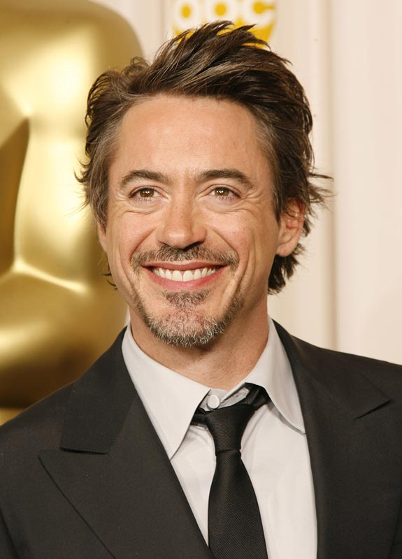
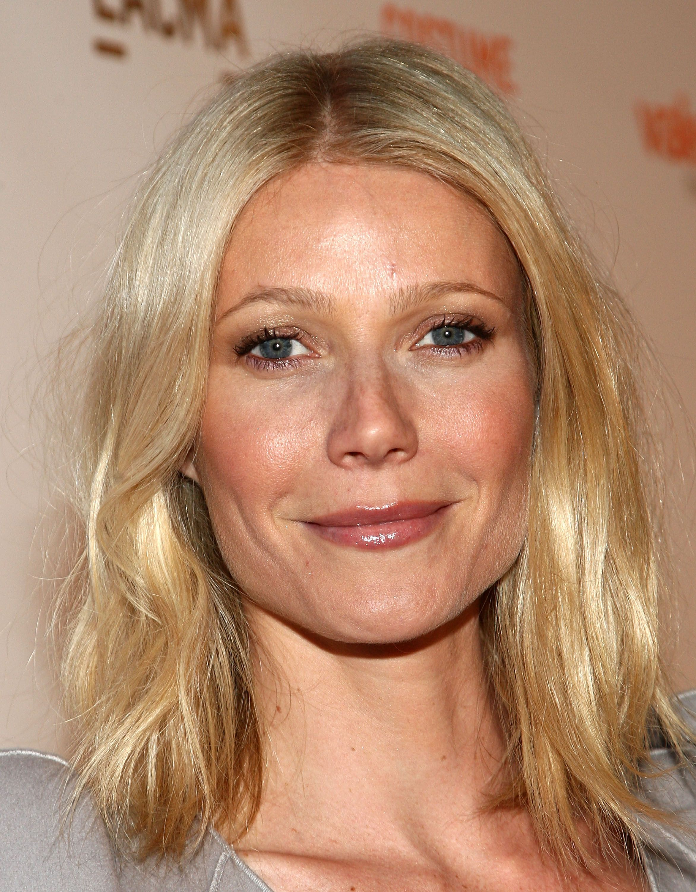
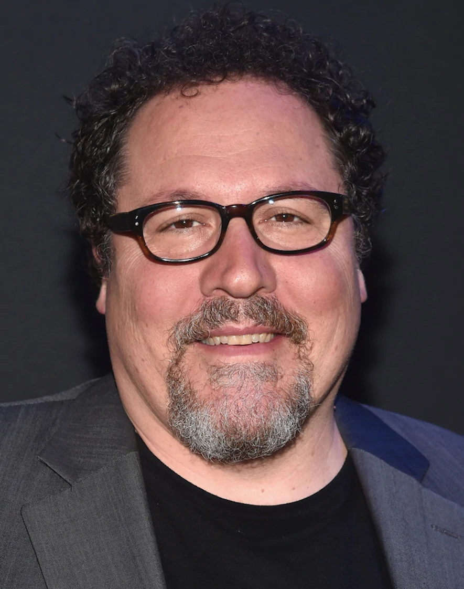
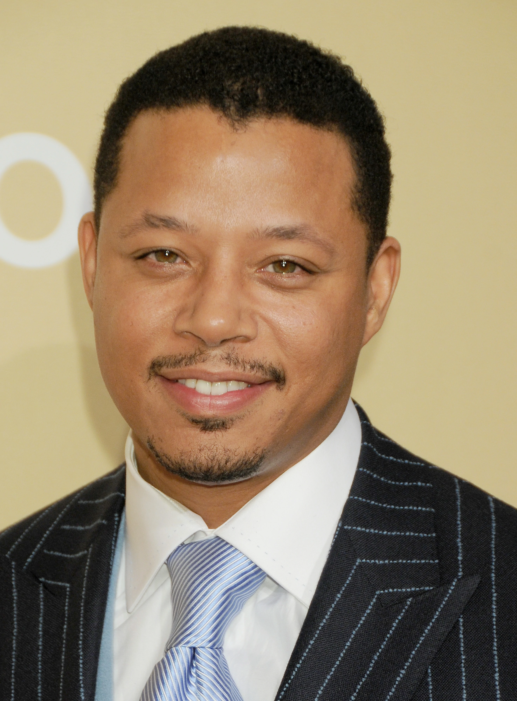
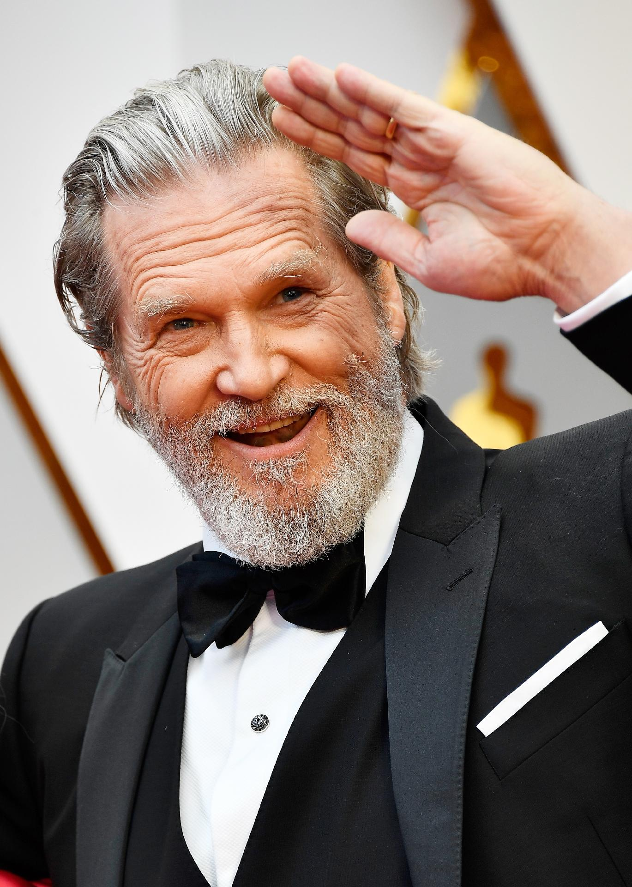

Nome: Robert John Downey Jr.
Idade: 57 anos
Nacionalidade: Norte-americano (Nova York)
Outros filmes: Sherlock Holmes (2009), Sherlock Holmes - O Jogo de Sombras, Viúva Negra (2021), Dolittle
Ocupações: Ator, pianista, cantor e compositor.

Nome: Gwyneth Kate Paltrow
Idade: 49 anos
Nacionalidade: Norte-americana (Los Angeles)
Outros filmes: Vingadores: Guerra Infinita, Homem-Aranha: De Volta ao Lar, Confidencial, Se7en - Os Sete Pecados Capitais
Ocupações: Atriz, escritora e cantora.

Nome: Jonathan Kolia "Jon" Favreau
Idade: 55 anos
Nacionalidade: Norte-americano (Nova York)
Outros filmes: Homem de Ferro 2, Homem de Ferro 3, Homem Aranha: Sem Volta para Casa, Um Duende em Nova York
Ocupações: Diretor, ator, argumentista e comediante.

Nome: Terrence Dashon Howard
Idade: 53 anos
Nacionalidade: Americano (Chicago)
Outros filmes: O Mordomo da Casa Branca, Vovó... Zona, Mr. Holland - Adorável Professor, Crash - No Limite
Ocupação: Ator

Nome: Jeffrey Leon Bridges
Idade: 72 anos
Nacionalidade: Norte-americano (Los Angeles)
Outros filmes: Doador de Memórias, Tron - O Legado, Only The Brave, Homem-Aranha: Longe de Casa
Ocupações: Ator e Músico